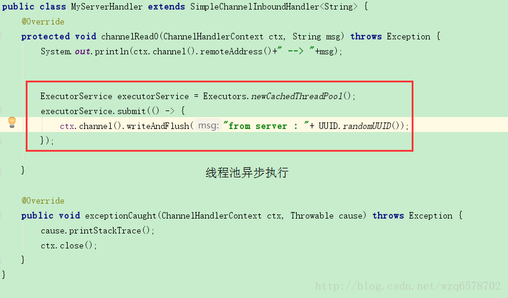
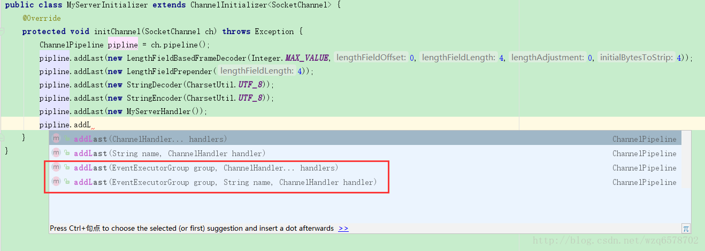
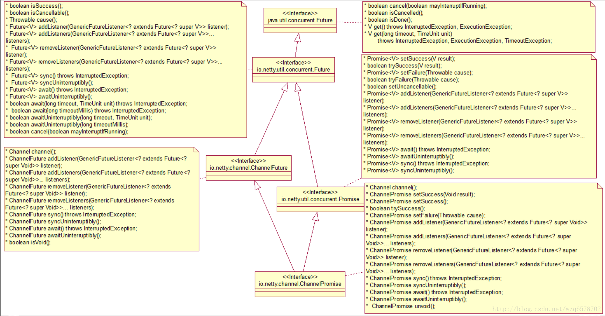
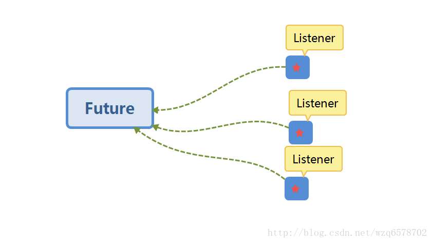
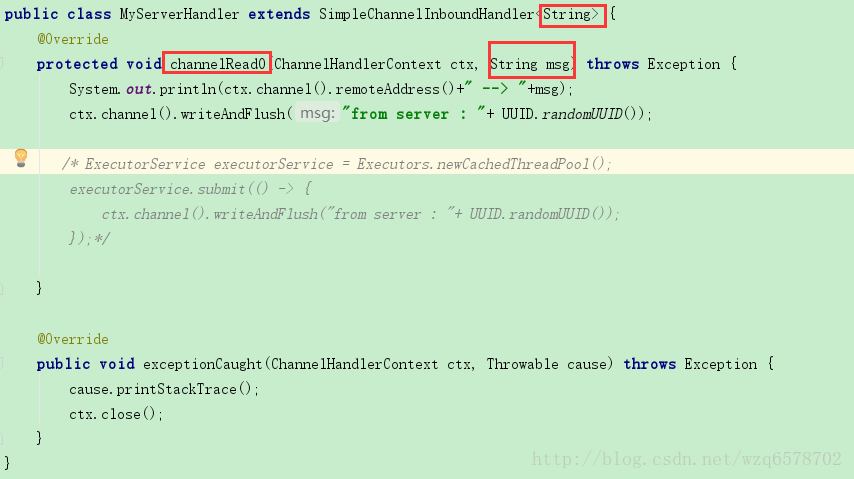

netty源码分析(十八)Netty底层架构系统总结与应用实践
- 一个EventLoopGroup当中会包含一个或多个EventLoop。
- 一个EventLoop在它的整个生命周期当中都只会与唯一一个Thread进行绑定。
- 所有由EventLoop所处理的各种I/O事件都将在它所关联的那个Thread上进行处理。
- 一个Channel在它的整个生命周期中只会注册在一个EventLoop上。
- 一个EventLoop在运行过程中，会被分配给一个或多个Channel。
- 同一个Channel提交的任务执行顺序和提交顺序是一样的（先进去的先出来，任务队列）。
重要结论：在netty的实现当中一定是线程安全的，基于此我们可以存储存储一个channel的引用，并且在需要向远程端点发送数据时，通过这个引用来调用Channel相应的方法；即便当时有很多线程在使用它也不会出现多线程问题，而且消息一定会按照顺序发送出去。
重要结论：我们在业务开发中，不要将长时间执行的耗时任务放入到EventLoop的执行队列中，因为它将会一直阻塞该线程所对应的所有Channel上的其他执行任务，如果我们需要进行阻塞调用或是耗时的操作（实际开发中很常见），那么我们就需要使用一个专门的EventExecutor（业务线程池）。
通常会有2种实现方式：
1、在ChannelHandler的回调方法中，使用自己定义的业务线程池，这样就可以实现异步调用。

2、借助于netty提供的向ChannelPipeLine添加ChannelHandler时调用的addLast方法来传递EventExecutor。
说明：默认情况下（调用addLast(handler)），ChannelHandler中的回调方法都是由I/O线程所执行，如果调用了ChannelPipeline addLast(EventExecutorGroup group, ChannelHandler… handlers);方法，那么ChannelHandler中的回调方法就是由参数中的group线程组来执行。

netty的异步：

从上图可以看到，ChannelPromise继承了Promise 接口，而Promise是可以写的(writable)，什么是可以写的，之前的Future都是get，isSuccess之类的方法，在ChannelPromise里边可以看到setSuccess(Void result)【setSuccess只能写一次，下一次写报错】之类的写方法。ChannelPromise字面意思是承诺的意思，不管是成功还是失败会承诺给你一个结果。
JDK所提供的Future只能通过手工方式检查执行结果，而这个操作是会阻塞的；Netty则对ChannelFuture进行了增强，这里涉及到的是观察者模式，通过ChannelFutureListener以回调的方式来获取执行结果，去除了手工检查阻塞的操作，值得注意的是：ChannelFutureListener的operationcomplete方法是由I/O线程执行的，因此要注意的是不要再这里执行耗时操作，否则需要需要通过另外的线程或线程池来执行。

举例：jdk的Future得到返回结果是使用get或者isDone获取，而这两个方式是阻塞的，即使是用超时时间的方法如果时间到了获取不到也是返回null，这些事情都是开发人员自己做的，而Netty解决了这个弊端，netty通过在Future上加入了监听器的模式，注册到Future上若干Listner，Future持有Channel，当某一个事件发生的时候，Future调用对应的Listner的方法，方法入参会有当前Future的引用，所以在Listener里边就会得到Future的Channel，之后在Listener里边得到Channel的数据进行处理，这也是上边说的不要再Listener的方法里边处理耗时的业务的原因。
再说一下ChannelHandler，ChannelHandler有入栈和出栈的Handler，就拿ChannelInboundHandlerAdapter 来说，我们要写一个入栈处理器，需要必须重写接口里边的所有方法，但是我们只用一部分方法，而Adapter是一种适配器模式，会把所有方法实现，我们在用的时候直接用适配的类（要么重写要么直接使用）去实现业务逻辑就可以了，大大方便了开发者以及减轻来了开发者的工作量。
1 | public class ChannelInboundHandlerAdapter extends ChannelHandlerAdapter implements ChannelInboundHandler { |
ChannelInboundHandlerAdapter 的具体实现类有SimpleChannelInboundHandler,他和ChannelInboundHandlerAdapter 有什么区别呢？
1 | public abstract class SimpleChannelInboundHandler<I> extends ChannelInboundHandlerAdapter |
很直观就是加了一个泛型I，I就是接受的消息的类型，比如String，Object等，而在ChannelInboundHandlerAdapter 里边四需要把消息 强制类型转换的，这是他们最大的区别。除此之外SimpleChannelInboundHandler会对消息执行ReferenceCountUtil.release(Object)和ReferenceCountUtil.retain(Object) 分别是释放一个消息引用和保持一个消息引用（流到下一个handler）.
我们一般会使用ChannelInboundHandlerAdapter 和SimpleChannelInboundHandler处理入栈数据。
实际应用：

ReferenceCountUtil的release方法：
1 | public static boolean release(Object msg) { |
最终使用的是ReferenceCounted类操作的：
1 | /** |